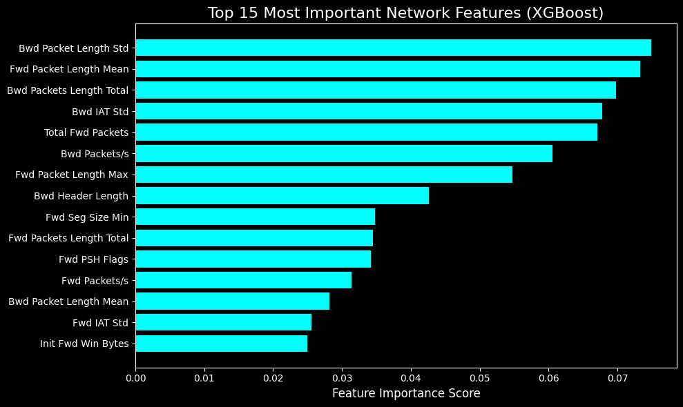
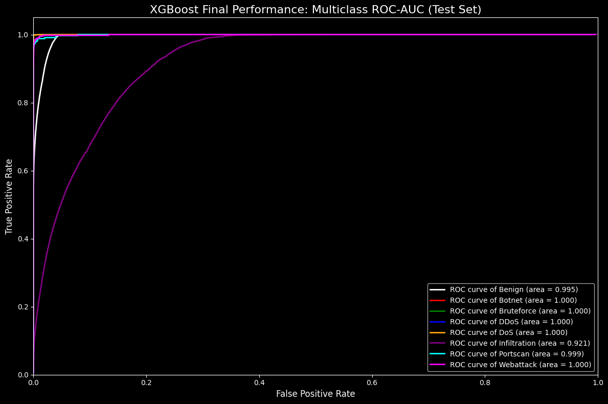
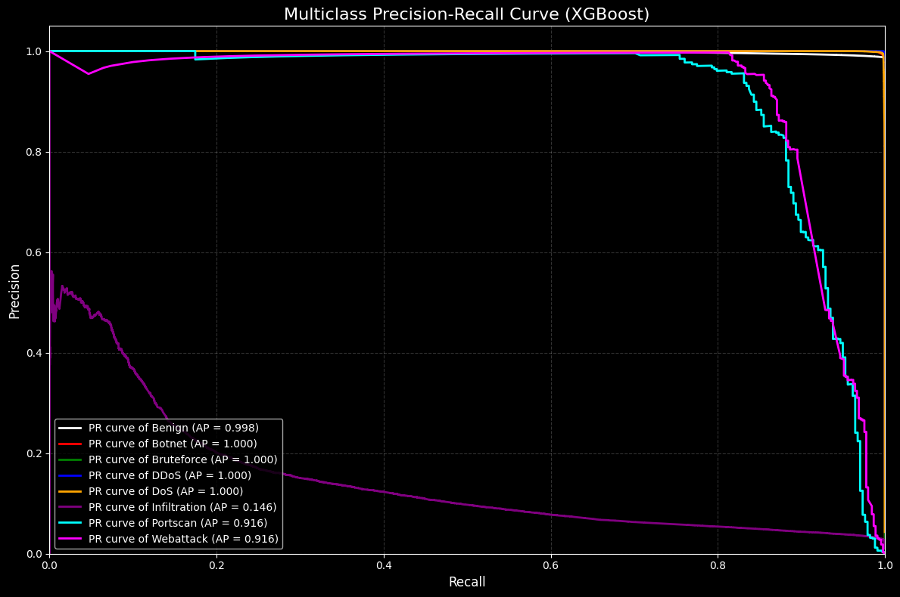

The prediction unit
One completed network flow, represented by packet counts, byte rates, durations, timing statistics and flags. Predict
ClassLabel
from flow metadata, without reading payload content.
Multiclass Network Attack Classification
from Network Flow Features
Can the statistics of a network flow distinguish everyday traffic from an attack? Explore eight traffic classes, five models, and the errors hidden behind high accuracy.
One completed network flow, represented by packet counts, byte rates, durations, timing statistics and flags. Predict
ClassLabel
from flow metadata, without reading payload content.
Benign, Botnet, Bruteforce, DDoS, DoS, Infiltration, Portscan or Webattack. These are the eight existing collection labels; no additional regrouping or removal of rare classes is shown.
Performance describes this benchmark and its split. It does not establish detection of unseen attack families, early-flow detection, or generalization to a new network or time period.
Benign flows outnumber Portscan flows by roughly 3,187 to 1 .
The notebook loads
cic-collection.parquet
: 9,167,581 rows and 59 columns. Removing
Label
and separating
ClassLabel
leaves 57 numeric predictors.
The CIC-IDS-Collection catalog combines CIC-IDS2017, CIC-DoS2017, CSE-CIC-IDS2018 and CIC-DDoS2019 with harmonized labels and feature cleanup. The notebook's local file has no recorded download version or hash, so its exact provenance still needs confirmation.
Source: saved notebook output, before any additional duplicate audit. Public benchmark access may require a Kaggle account and acceptance of dataset terms.
Label
is dropped;
ClassLabel
becomes the sole target. Numeric label encoding identifies categories without adding an order to the prediction task.
Replace ±∞ with NaN, then drop incomplete rows. Zero-duration rate calculations can generate invalid values. The recorded cleaning output removes no rows.
✓ In notebookCheck repeated column names and identical feature columns (such as duplicate header-length fields) before duplicate rows. Group identical flow features across splits; investigate conflicting labels.
○ Recommended · not recordedFit a zero-variance filter on training data only and reuse its column mask. Features such as Bwd PSH Flags can be constant in some datasets; verify this file rather than assuming.
○ Recommended · not recordedRobustScaler uses training medians and interquartile ranges for the linear baseline and MLP. It reduces sensitivity to extreme feature scales; it does not remove outliers. Tree ensembles are unscaled.
✓ In notebookA stratified 20% sample of the training split leaves 1,283,462 rows. This approximates class proportions, not guaranteed convergence. The notebook downcasts to float16/32; its cast warnings warrant a precision audit.
✓ Subsampling recordedNetwork polling may produce repeated records, but identical feature vectors are not automatically the same event. Define and document a duplicate policy, remove redundant columns first, then count exact rows and conflicting-label feature groups. Preserve event IDs where available, and keep related flows in one split. Report before/after class counts. The current notebook shows neither duplicate removal nor a group-aware split; its reported scores should be read with that limitation.
| Model | Why use it? | Recorded configuration |
|---|---|---|
| Majority baseline | A prevalence-based sanity check; computed here from validation support. | Always predict Benign |
| Linear baseline (SGD) | Log-loss linear decision boundaries; exposes whether linear separation is adequate. | RobustScaler · balanced weights · seed 42 |
| Random Forest | Bagged trees capture interactions and nonlinear boundaries. | 50 trees · depth 15 · balanced weights |
| Histogram Gradient Boosting | Boosted binned trees improve residual errors with efficient split search. | 100 iterations · learning rate 0.1 |
| XGBoost | Regularized boosted trees model nonlinear feature interactions. | 100 trees · depth 6 · rate 0.1 · hist |
| MLP | A nonlinear neural alternative; sensitive to scale and class imbalance. | 128 → 64 → 32 · batch 2,048 · early stopping |
The baseline is SGDClassifier(loss='log_loss'), not a fitted multinomial LogisticRegression estimator. Only the SGD baseline and Random Forest explicitly use balanced class weights in this notebook; the XGBoost fit has no sample weights.
Two random splits preserve approximate class proportions. The training partition is then subsampled to 20%; validation and test remain intact. This is not a host- or time-disjoint evaluation.
Macro-F1 gives every class equal weight. Precision measures false-alert burden; recall measures missed attacks. Weighted-F1 and accuracy summarize frequency-weighted behavior. One-vs-rest PR curves expose rare-class tradeoffs.
Model comparisons below use validation results. The notebook later loads the test set for XGBoost ROC and PR curves. No systematic search log, test classification report, or repeated-run confidence intervals are recorded.
Inspect each class. Follow the mistakes.
0 = lowest · 1 = highest · notebook reports rounded to two decimals
XGBoost assigns 13,769 of 14,229 validation Infiltration flows to Benign. Its Infiltration recall is just 3.2% , despite 98.88% overall accuracy. Similar flow summaries are a plausible explanation, not a proven causal mechanism.
The SGD baseline hit its iteration limit. This may reflect scaling, optimization settings or difficult data; it does not prove linear models cannot converge. Tune it before drawing a strong model-family conclusion.
This run has zero recall for Infiltration, Portscan and Webattack. Imbalance is a plausible factor; it is not proof that an MLP cannot learn them. Compare weighting or resampling on training folds and inspect learning curves.
The reported test Infiltration ROC-AUC is about 0.921. Multiclass prediction uses the largest score, not a universal 0.5 threshold. Any class-specific alert threshold needs validation-based calibration and a false-positive budget.
These are the saved output images, not regenerated experiments. The matrix is validation data; ROC and PR figures use test data.




Move a feature. Observe how a simplified scoring rule responds.
If the highest toy score is below this threshold, request review. This changes the decision, not the distribution.
Additive score terms before softmax. A larger positive term favors the current leading class; these are not SHAP values.
This website transcribes saved outputs. It does not rerun training or imply the full pipeline was independently reproduced.
AI assistance was used to build this website, transcribe and structure saved notebook results, and review the supplied methodological notes. The browser simulation is AI-authored illustrative code. Model training was not rerun for this website.
[TEAM TO COMPLETE] Identify the AI tools used during the original analysis, what they contributed, and how their suggestions and code were checked. The original analysis's AI-use history is not established by the repository.
This static website contains aggregate metrics, saved plots, and synthetic flow examples. It contains no private flow records, packet payloads, credentials or API keys. The inspector runs locally in your browser and sends no feature values to a server.